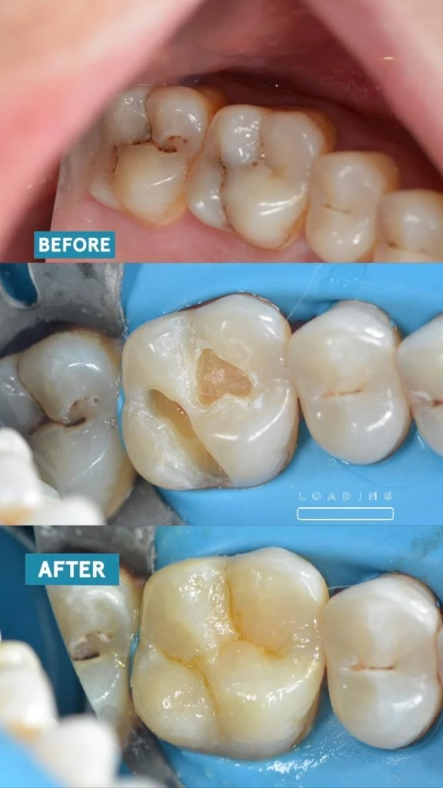
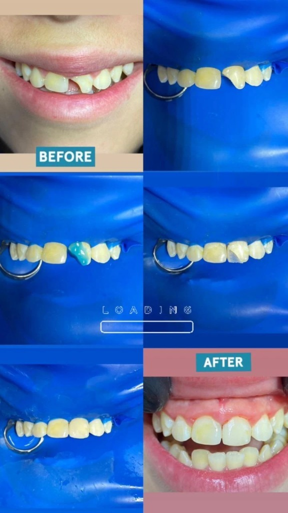
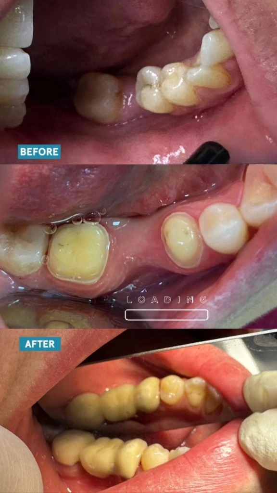
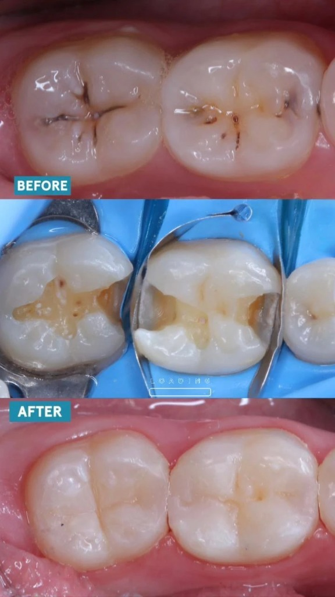
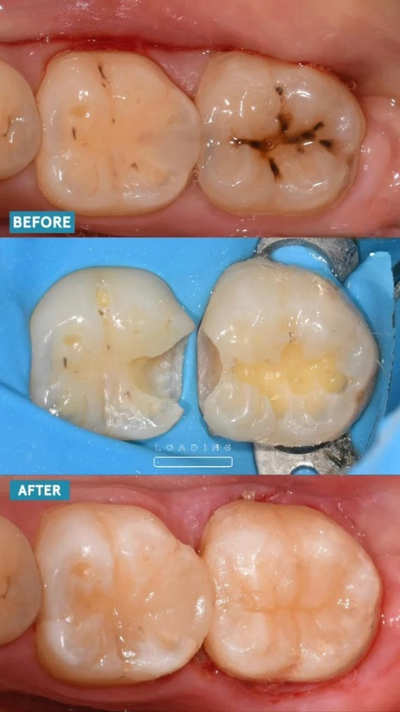

Case 1

Case 2

Case 3

Case 4

Case 5

Case 6

I’m an Egyptian student in my 4th year at the Faculty of Dentistry, Ahram Canadian University (ACU). I’m passionate about cosmetic and restorative dentistry and always striving to improve my skills through hands-on experience and continuous learning. This portfolio showcases a selection of my clinical work demonstrating the transformations I’ve helped achieve for patients.
📠Egypt-cairo 📠+20 101 463 4271 | âœ‰ï¸ ziadbadrelden88@gmail.com |